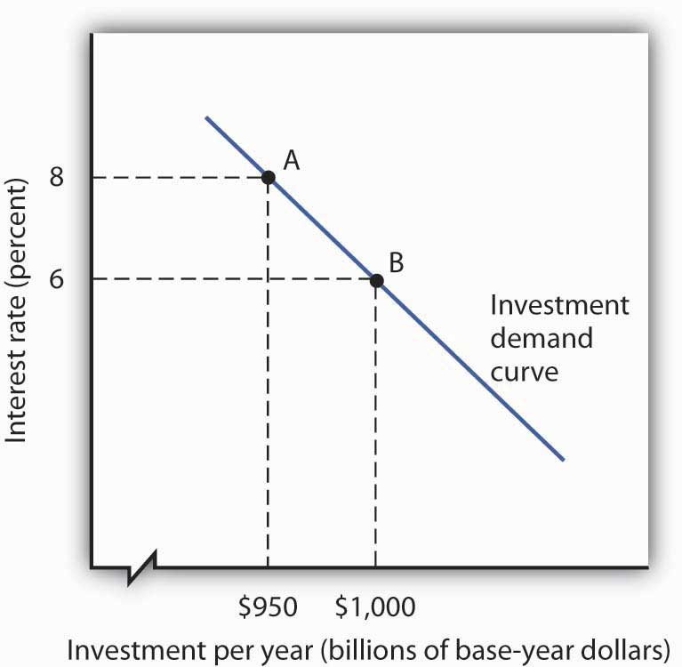

We will see in this section that interest rates play a key role in the determination of the desired stock of capital and thus of investment. Because investment is a process through which capital is increased in one period for use in future periods, expectations play an important role in investment as well.
Capital is one factor of production, along with labor and natural resources. A decision to invest is a decision to use more capital in producing goods and services. Factors that affect firms’ choices in the mix of capital, labor, and natural resources will affect investment as well.
We will also see in this section that public policy affects investment. Some investment is done by government agencies as they add to the public stock of capital. In addition, the tax and regulatory policies chosen by the public sector can affect the investment choices of private firms and individuals.
We often hear reports that low interest rates have stimulated housing construction or that high rates have reduced it. Such reports imply a negative relationship between interest rates and investment in residential structures. This relationship applies to all forms of investment: higher interest rates tend to reduce the quantity of investment, while lower interest rates increase it.
To see the relationship between interest rates and investment, suppose you own a small factory and are considering the installation of a solar energy collection system to heat your building. You have determined that the cost of installing the system would be $10,000 and that the system would lower your energy bills by $1,000 per year. To simplify the example, we shall suppose that these savings will continue forever and that the system will never need repair or maintenance. Thus, we need to consider only the $10,000 purchase price and the $1,000 annual savings.
If the system is installed, it will be an addition to the capital stock and will therefore be counted as investment. Should you purchase the system?
Suppose that your business already has the $10,000 on hand. You are considering whether to use the money for the solar energy system or for the purchase of a bond. Your decision to purchase the system or the bond will depend on the interest rate you could earn on the bond.
Putting $10,000 into the solar energy system generates an effective income of $1,000 per year—the saving the system will produce. That is a return of 10% per year. Suppose the bond yields a 12% annual interest. It thus generates interest income of $1,200 per year, enough to pay the $1,000 in heating bills and have $200 left over. At an interest rate of 12%, the bond is the better purchase. If, however, the interest rate on bonds were 8%, then the solar energy system would yield a higher income than the bond. At interest rates below 10%, you will invest in the solar energy system. At interest rates above 10%, you will buy a bond instead. At an interest rate of precisely 10%, it is a toss-up.
If you do not have the $10,000 on hand and would need to borrow the money to purchase the solar energy system, the interest rate still governs your decision. At interest rates below 10%, it makes sense to borrow the money and invest in the system. At interest rates above 10%, it does not.
In effect, the interest rate represents the opportunity cost of putting funds into the solar energy system rather than into a bond. The cost of putting the $10,000 into the system is the interest you would forgo by not purchasing the bond.
At any one time, millions of investment choices hinge on the interest rate. Each decision to invest will make sense at some interest rates but not at others. The higher the interest rate, the fewer potential investments will be justified; the lower the interest rate, the greater the number that will be justified. There is thus a negative relationship between the interest rate and the level of investment.
Figure 29.5 "The Investment Demand Curve" shows an investment demand curveA curve that shows the quantity of investment demanded at each interest rate, with all other determinants of investment unchanged. for the economy—a curve that shows the quantity of investment demanded at each interest rate, with all other determinants of investment unchanged. At an interest rate of 8%, the level of investment is $950 billion per year at point A. At a lower interest rate of 6%, the investment demand curve shows that the quantity of investment demanded will rise to $1,000 billion per year at point B. A reduction in the interest rate thus causes a movement along the investment demand curve.
Figure 29.5 The Investment Demand Curve
The investment demand curve shows the volume of investment spending per year at each interest rate, assuming all other determinants of investment are unchanged. The curve shows that as the interest rate falls, the level of investment per year rises. A reduction in the interest rate from 8% to 6%, for example, would increase investment from $950 billion to $1,000 billion per year, all other determinants of investment unchanged.
To make sense of the relationship between interest rates and investment, you must remember that investment is an addition to capital, and that capital is something that has been produced in order to produce other goods and services. A bond is not capital. The purchase of a bond is not an investment. We can thus think of purchasing bonds as a financial investment—that is, as an alternative to investment. The more attractive bonds are (i.e., the higher their interest rate), the less attractive investment becomes. If we forget that investment is an addition to the capital stock and that the purchase of a bond is not investment, we can fall into the following kind of error: “Higher interest rates mean a greater return on bonds, so more people will purchase them. Higher interest rates will therefore lead to greater investment.” That is a mistake, of course, because the purchase of a bond is not an investment. Higher interest rates increase the opportunity cost of using funds for investment. They reduce investment.
Perhaps the most important characteristic of the investment demand curve is not its negative slope, but rather the fact that it shifts often. Although investment certainly responds to changes in interest rates, changes in other factors appear to play a more important role in driving investment choices.
This section examines eight additional determinants of investment demand: expectations, the level of economic activity, the stock of capital, capacity utilization, the cost of capital goods, other factor costs, technological change, and public policy. A change in any of these can shift the investment demand curve.
A change in the capital stock changes future production capacity. Therefore, plans to change the capital stock depend crucially on expectations. A firm considers likely future sales; a student weighs prospects in different occupations and their required educational and training levels. As expectations change in a way that increases the expected return from investment, the investment demand curve shifts to the right. Similarly, expectations of reduced profitability shift the investment demand curve to the left.
Firms need capital to produce goods and services. An increase in the level of production is likely to boost demand for capital and thus lead to greater investment. Therefore, an increase in GDP is likely to shift the investment demand curve to the right.
To the extent that an increase in GDP boosts investment, the multiplier effect of an initial change in one or more components of aggregate demand will be enhanced. We have already seen that the increase in production that occurs with an initial increase in aggregate demand will increase household incomes, which will increase consumption, thus producing a further increase in aggregate demand. If the increase also induces firms to increase their investment, this multiplier effect will be even stronger.
The quantity of capital already in use affects the level of investment in two ways. First, because most investment replaces capital that has depreciated, a greater capital stock is likely to lead to more investment; there will be more capital to replace. But second, a greater capital stock can tend to reduce investment. That is because investment occurs to adjust the stock of capital to its desired level. Given that desired level, the amount of investment needed to reach it will be lower when the current capital stock is higher.
Suppose, for example, that real estate analysts expect that 100,000 homes will be needed in a particular community by 2010. That will create a boom in construction—and thus in investment—if the current number of houses is 50,000. But it will create hardly a ripple if there are now 99,980 homes.
How will these conflicting effects of a larger capital stock sort themselves out? Because most investment occurs to replace existing capital, a larger capital stock is likely to increase investment. But that larger capital stock will certainly act to reduce net investment. The more capital already in place, the less new capital will be required to reach a given level of capital that may be desired.
The capacity utilization rateA measure of the percentage of the capital stock in use. measures the percentage of the capital stock in use. Because capital generally requires downtime for maintenance and repairs, the measured capacity utilization rate typically falls below 100%. For example, the average manufacturing capacity utilization rate was 79.7% for the period from 1972 to 2007. In November 2008 it stood at 72.3.
If a large percentage of the current capital stock is being utilized, firms are more likely to increase investment than they would if a large percentage of the capital stock were sitting idle. During recessions, the capacity utilization rate tends to fall. The fact that firms have more idle capacity then depresses investment even further. During expansions, as the capacity utilization rate rises, firms wanting to produce more often must increase investment to do so.
The demand curve for investment shows the quantity of investment at each interest rate, all other things unchanged. A change in a variable held constant in drawing this curve shifts the curve. One of those variables is the cost of capital goods themselves. If, for example, the construction cost of new buildings rises, then the quantity of investment at any interest rate is likely to fall. The investment demand curve thus shifts to the left.
The $10,000 cost of the solar energy system in the example given earlier certainly affects a decision to purchase it. We saw that buying the system makes sense at interest rates below 10% and does not make sense at interest rates above 10%. If the system costs $5,000, then the interest return on the investment would be 20% (the annual saving of $1,000 divided by the $5,000 initial cost), and the investment would be undertaken at any interest rate below 20%.
Firms have a range of choices concerning how particular goods can be produced. A factory, for example, might use a sophisticated capital facility and relatively few workers, or it might use more workers and relatively less capital. The choice to use capital will be affected by the cost of the capital goods and the interest rate, but it will also be affected by the cost of labor. As labor costs rise, the demand for capital is likely to increase.
Our solar energy collector example suggests that energy costs influence the demand for capital as well. The assumption that the system would save $1,000 per year in energy costs must have been based on the prices of fuel oil, natural gas, and electricity. If these prices were higher, the savings from the solar energy system would be greater, increasing the demand for this form of capital.
The implementation of new technology often requires new capital. Changes in technology can thus increase the demand for capital. Advances in computer technology have encouraged massive investments in computers. The development of fiber-optic technology for transmitting signals has stimulated huge investments by telephone and cable television companies.
Public policy can have significant effects on the demand for capital. Such policies typically seek to affect the cost of capital to firms. The Kennedy administration introduced two such strategies in the early 1960s. One strategy, accelerated depreciation, allowed firms to depreciate capital assets over a very short period of time. They could report artificially high production costs in the first years of an asset’s life and thus report lower profits and pay lower taxes. Accelerated depreciation did not change the actual rate at which assets depreciated, of course, but it cut tax payments during the early years of the assets’ use and thus reduced the cost of holding capital.
The second strategy was the investment tax credit, which permitted a firm to reduce its tax liability by a percentage of its investment during a period. A firm acquiring new capital could subtract a fraction of its cost—10% under the Kennedy administration’s plan—from the taxes it owed the government. In effect, the government “paid” 10% of the cost of any new capital; the investment tax credit thus reduced the cost of capital for firms.
Though less direct, a third strategy for stimulating investment would be a reduction in taxes on corporate profits (called the corporate income tax). Greater after-tax profits mean that firms can retain a greater portion of any return on an investment.
A fourth measure to encourage greater capital accumulation is a capital gains tax rate that allows gains on assets held during a certain period to be taxed at a different rate than other income. When an asset such as a building is sold for more than its purchase price, the seller of the asset is said to have realized a capital gain. Such a gain could be taxed as income under the personal income tax. Alternatively, it could be taxed at a lower rate reserved exclusively for such gains. A lower capital gains tax rate makes assets subject to the tax more attractive. It thus increases the demand for capital. Congress reduced the capital gains tax rate from 28% to 20% in 1996 and reduced the required holding period in 1998. The Jobs and Growth Tax Relief Reconciliation Act of 2003 reduced the capital gains tax further to 15% and also reduced the tax rate on dividends from 38% to 15%. A proposal to eliminate capital gains taxation for smaller firms was considered but dropped before the stimulus bill of 2009 was enacted.
Accelerated depreciation, the investment tax credit, and lower taxes on corporate profits and capital gains all increase the demand for private physical capital. Public policy can also affect the demands for other forms of capital. The federal government subsidizes state and local government production of transportation, education, and many other facilities to encourage greater investment in public sector capital. For example, the federal government pays 90% of the cost of investment by local government in new buses for public transportation.
Show how the investment demand curve would be affected by each of the following:

The U.S. economy was expanding in 2004, but there was a feeling that it still was not functioning as well as it could, as job growth was rather sluggish. To try to spur growth, Congress, supported by President Bush, passed a law in 2004 called the American Jobs Creation Act that gave businesses a one-year special tax break on any profits accumulating overseas that were transferred to the United States. Such profits are called repatriated profits and were estimated at the time to be about $800 billion. For 2005, the tax rate on repatriated profits essentially fell from 25% to 5.25%.
Did the tax break have the desired effect on the economy? To some extent yes, though business also found other uses for the repatriated funds. There were 843 companies that repatriated $312 billion that qualified for the tax break. The Act thus generated about $18 billion in tax revenue, a higher level than had been expected. Some companies announced they were repatriating profits and continuing to downsize. For example, Colgate-Palmolive brought back $800 million and made known it was closing a third of its factories and eliminating 12% of its workforce. However, other companies’ plans seemed more in line with the objectives of the special tax break—to create jobs and spur investment.
For example, spokesman Chuck Mulloy of Intel, which repatriated over $6 billion, said the company was building a $3-billion wafer fabrication facility and spending $345 million on expanding existing facilities. “I can’t say dollar-for-dollar how much of the funding for those comes from off-shore cash,” but he felt that the repatriated funds were contributing to Intel’s overall investments. Spokeswoman Margaret Graham of Bausch and Lomb, which makes eye-care products and repatriated $805 million, said, “We plan to use that cash for capital expenditures, investment in research and development, and paying nonofficer compensation.”
Analysts are skeptical, though, that the repatriated profits really contributed to investment. The New York Times reported on one study that suggested it had not. Rather, the repatriated funds were used for other purposes, such as stock repurchases. The argument is that the companies made investments that they were planning to make and the repatriated funds essentially freed up funding for other purposes.
Sources: Timothy Aeppel, “Tax Break Brings Billion to U.S., But Impact on Hiring Is Unclear,” Wall Street Journal, October 5, 2005, p. A1; Lynnley Browning, “A One-Time Tax Break Saved 843 U.S. Corporations $265 Billion,” New York Times, June 24, 2008, p. C3.